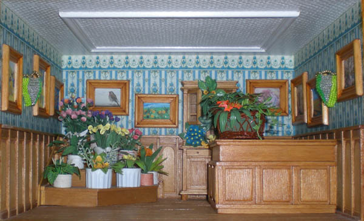
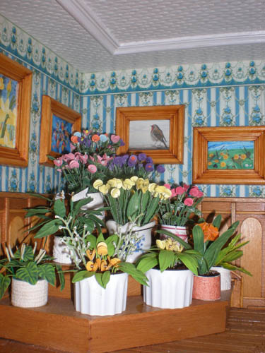
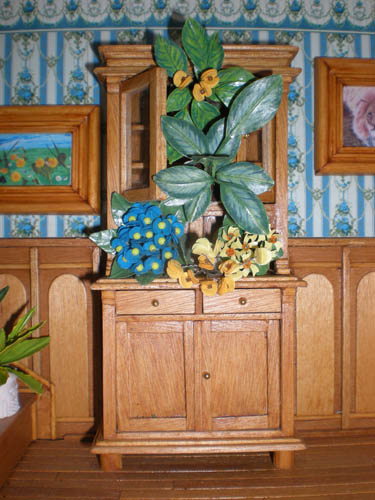

De bloemenwinkel En tevens expositieruimte..
Ook hier heb ik voor de lambrisering gebruik gemaakt van tongspatels, je kan ze per doosje kopen bij de apotheek,
De bloemetjes zijn van papier en de blaadjes van de plantjes zijn van schiderstape..
De potjes zijn dopjes van bv de tandpasta..
De lampenkapjes heb ik van kraaltjes en dun ijzerdaad geregen.
Meubels heb ik gemaakt van sigarenkistjes.
De schilderijen zijn kleine kopieen van grote werken, de schilders hebben daar toestemming voor gegeven..
De lijstjes zaag ik uit een latje van de bouwmarkt..


